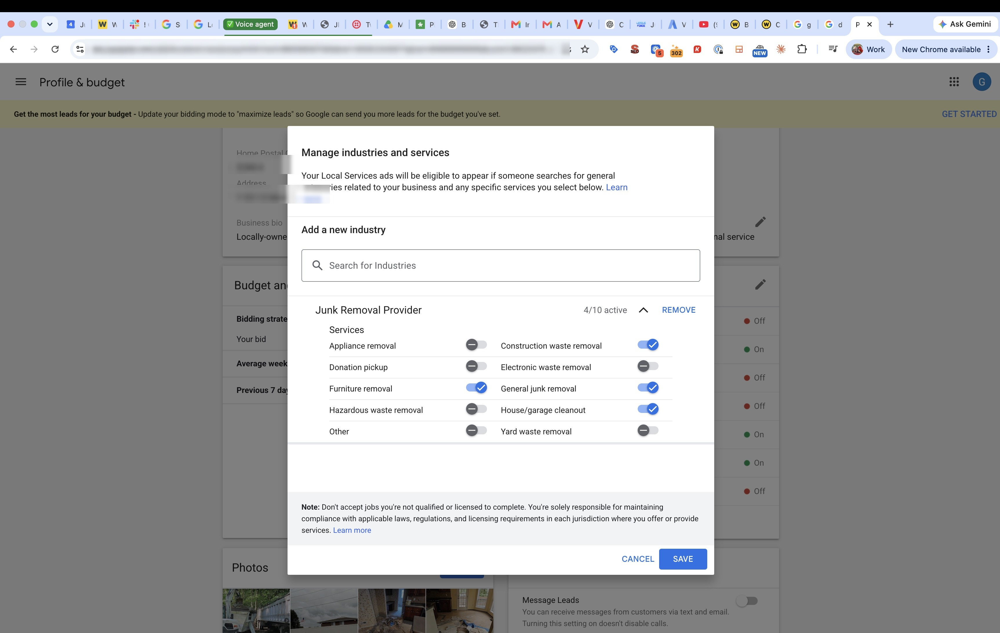

Google is shutting down the old Local Services Ads dashboard. Your account moves into Google Ads on its own, and junk removal is on the list for August 2026.
You get an email about 14 days before your account moves, then a reminder at 7 days, then it happens. You do not pick the date.
One thing only works before that day. Your customer records come with you: names, phone numbers, message threads, even old call recordings. Your performance history does not. Once the old dashboard closes, what you spent and what it earned you is gone for good.
Accurate as of August 2026. This is still rolling out, so check the notice in your own account.
Work it in order. Only the first group has a deadline attached to it.
This part is not about the migration. It is how you keep your cost down and your leads good, before and after the move.

Those four are the ones we recommend every junk removal company run. You can try the others if you genuinely do that work, just watch what those leads cost you and turn them back off if they do not pay.
Why this matters more than it used to. Google no longer gives you money back for a lead that came in for a service you do not offer, or from an area you do not serve. Those used to be your two easiest refunds. Choosing your services carefully is now the main way you control what you spend.
Go a little wider than you normally would, because when Google is not sure exactly where the caller is, it leans toward companies that cover more ground. Then stop. Trucks that stay in a tight area get seen more and drive less. Widen it when you have the trucks, the people and the routing to handle it, and not before.
Every LSA call runs through a Google number, so Google knows whether you picked up and how long you talked. There is no published target to hit. You are being measured against the other companies in your market, which means this is the one thing you can always beat them on. A missed call costs you twice: you lose the job, and you lose position for the next one.
If a machine answers for you, it has to actually do the job. It needs to hold a real conversation and book the work, or hand the call straight to a person. An answering service that takes a message does not count.
How we set it up. During business hours, let it ring three times to your team. If nobody picks up by then, forward the call to an AI like Jenny, which answers immediately.
Some marketers will tell you to answer faster than that. We would rather a real person get there first, because it is simply better service. The AI is your backup, and it means the call never goes unanswered.
If you are doing everything else right and your impression share still is not where you want it, shorten the ring count.
You can no longer file a dispute. Google reviews leads on its own now and credits some of them back automatically, and the rating survey on the lead is how you tell it what went wrong. Credits show up in your balance within about 30 days, and the original charge still shows on the invoice, which is why people think it never happened.
Since July 2025, every LSA review is managed through your Google Business Profile, and the old LSA review links no longer work. If your review request texts still point to one, fix them today. One review engine now feeds both your map ranking and your ads.
Your customer is looking at three ads side by side and picking one. Real photos of your trucks and crew do that convincing, and you can add them to your ad without touching your Business Profile. Google publishes no schedule for this. Monthly is simply what we do, because a profile nobody has touched in two years looks like a business nobody is running.
Everything in this checklist is three jobs, not one. The profile kept right, the LSA pruned and watched, and the phone answered fast. Most owners do one of them well.
This class also goes out to nearly 10,000 subscribers on YouTube, so far more people will see it than were on the call. Ten spots, first come. To claim one, leave a comment on the video or text Shane at 907-982-8460.